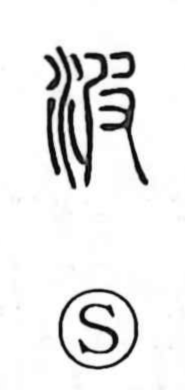

波

Uncategorized
Kun: nami | On: ha
wave ・ ripple ・ billow
Explanation
A phono-semantic character, 波 pairs the water element with 皮 as its phonetic. In early writing, 皮 pictures hands pulling a hide from an animal, and from that act it came to suggest something that snakes, winds, or inclines. Joined to water, those qualities become the heaving, tilting motion of waves—nami—and the swell of billows. The same image underlies compounds like 波及, where an influence spreads outward step by step like 波紋, the concentric ripples that widen across a surface when a stone is cast into water.